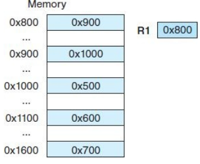

MARIE Examples
Sebastien Bah
March 2019
Memory Preamble
A few things before we get into MARIE
- Endianness
- Types of Addressing
Endianness
Assume we want to store a 4 Byte integer: ABCDEF01.
How would you place it in memory? (X is a memory address, X+1 is the next one,…)
ABCDEF01
| Endianness | X | X+1 | X+2 | X+3 |
|---|---|---|---|---|
| Big Endian | AB | CD | EF | 01 |
| Little Endian | 01 | EF | CD | AB |
Note that the order of the Bytes change, not the content of the Bytes
Addressing Modes
Best shown with an example, Let us say the operation was LOAD 800, consider it through the following modes (result goes into the AC).
- Immediate [take values as is]
- Direct [value to load is at address given]
- Indirect [address given leads to address of where the value is stored]
- Indexed [add the value given in the command with the value of a register, result is effective address]
 
Setup
Things you will need:
Multiplication
How do you multiply? Let’s say you want to do \(x = 5x+y\) ?
Write a quick function?
Code
// Fill out the code to have the function do x = 5x + y
// Code here
// Variables
X, DEC 6
Y, DEC 8
Candidate
// Fill out the code to have the function do x = 5x + y
Load X
Add X
Add X
Add X
Add X
Add Y
Store X
// Variables
X, DEC 6
Y, DEC 8
Jumps
// Jumps
// What is the final values of X and Y AND what is the output?
A, Clear
B, Input
C, Jump K
D, Jump F
E, Jump H
F, Store X
G, Jump L
H, Store Y
I, Output
J, Halt
K, Jump D
L, HEX 9008
// Variables
X, DEC 0
Y, DEC 0
Subroutines
Recall:
- JnS –> Stores the value of PC at address X and Jumps to X+1
- JumpI –> Uses the value at the memory address X as the addres to Jump to
Code
// Subroutines Aka Functions
Start, Jns Function
Load X
Output
Jns Function
Load X
Output
Jns Function
Output
Halt
// Just a memory location where we are going to
// store the address of the address of the instruction
// we skipped to get to this point
Function, HEX 0
Load X
Add X
Subt ONE
Store X
// Want to go back to where we were
JumpI Function
// Variables
ONE, DEC 1
X, DEC 3
Skip conditions
Recall:
- Skipcond 000 -> Skips next line if \(AC<0\)
- Skipcond 400 -> Skips next line if \(AC=0\)
- Skipcond 800 -> Skips next line if \(AC>0\)
Code
// Decoding memory content
A, LOAD Z
Output
Subt X
Skipcond 800
Jump B
Jump End
B, Load Z
Add ONE
Store Z
Jump A
End, Output
Halt
// Variables
ONE, DEC 1
X, DEC 5
Y, DEC 3
Z, DEC 0
Loops
Let’s do the multiplication function \(x = Nx+y\) but with loops.
(Tools needed: Jump and Skipcond)
Code
// Fill out the code to have the function do x = Nx + y
Input
Store N
Loop, Load N
Skipcond 800
Jump End
Subt ONE
Store N
XPart, Load TEMP
Add X
Store TEMP
Jump Loop
End, Load TEMP
Add Y
Store X
Output
Halt
// Variables
ONE, DEC 1
N, DEC 0
TEMP, DEC 0
X, DEC 2
Y, DEC 5
Decoding Memory Content
Given that the starting value of \(PC=000\), what does this program do?
Code
// Decoding memroy content
Clear
Jump C
B, Clear
Load X
Subt Y
Add ONE
C, Skipcond 400
Jump End
Jump B
End, Output
Halt
// Variables
ONE, DEC 1
X, DEC 16
Y, DEC 8
Finding the unknown
What is the value of UNKNOWN for the function to be \(A = 2Y - Z\)
Code
// What is the value of UNKNOWN for the
// function to be A = 2Y - Z
Input
Store UNKNOWN
Start, Load UNKNOWN
Subt ONE
Store UNKNOWN
Skipcond 800
Jump End
Ops, Load Y
Add ONE
Subt Z
Store A
Jump Start
// End of your function
End, Load A
Add Y
Subt ONE
Store A
Load UNKNOWN
Subt TWO
Store UNKNOWN
Skipcond 000
Jump End
Load A
Output
Halt
// Constants
ONE, DEC 1
TWO, DEC 2
THREE, DEC 3
// Variables
UNKNOWN, DEC 0
Y, DEC 5
Z, DEC 34
A, DEC 0
Array
// Stores the amount of numbers that you want (determined by your input)
// And prints them out at the end
// EX: first input 8 (dec)
// Subsequent: [67, 79, 77, 80, 32, 50, 50, 56] (all dec)
// Put your output mode to unicode
ORG 010
Start, Input
Store LenArray
Loop, Load LenArray
Subt Index
Skipcond 800
Jump DisplayAll
// Gets the next number to store
GetInput, Load StartIndex
Add Index
Store NextPos
// Take input now
Input
StoreI NextPos
JnS IncrIndex
Jump Loop
// Function to Increment Index
IncrIndex, Hex 0
Load Index
Add ONE
Store Index
JumpI IncrIndex
// Display all the elements in array
DisplayAll, Clear
Store Index
LoopOutput, Load LenArray
Subt Index
Skipcond 800
Jump End
Load StartIndex
Add Index
Store NextPos
LoadI NextPos
Output
Jns IncrIndex
Jump LoopOutput
// Termination point
End, Halt
// Variables
ONE, DEC 1
LenArray, DEC 0
StartIndex, HEX 10
NextPos, HEX 0
Index, DEC 0